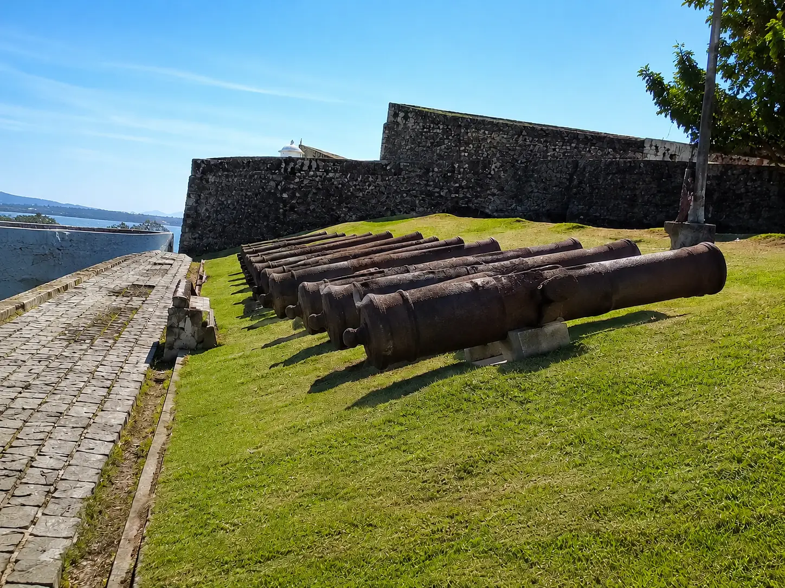
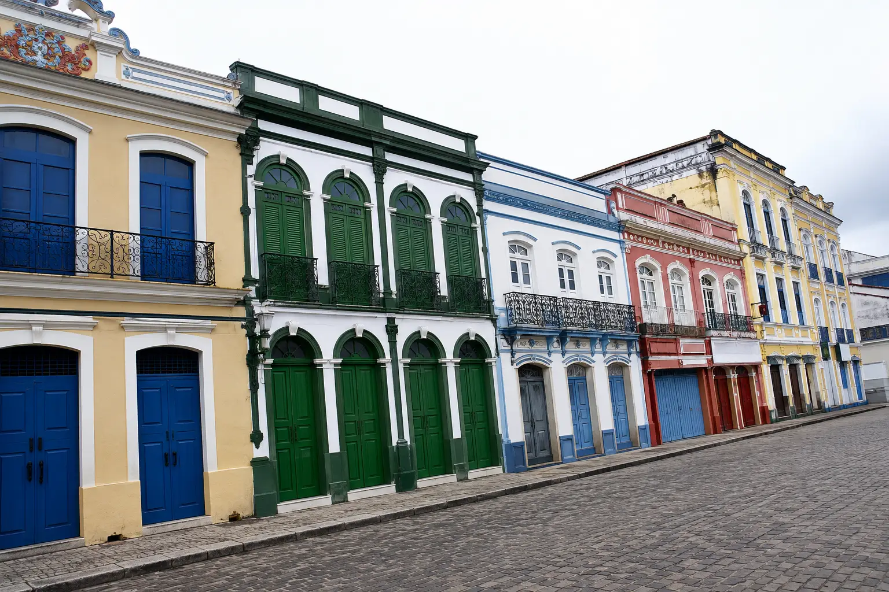

Fundação
Durante a colonização do Brasil,a coroa portuguesa se encontrava no risco iminente de perder o acesso à Amazônia,pois nações europeias como Holanda e Inglaterra já possuiam contato com os povos nativos.Consequentemente,para defender as florestas do norte, Portugal enviou do Maranhão,o capitão-mor Francisco Caldeira Castelo Branco rumo à Baía do Guajará,onde se estabeleceu no dia 12 de janeiro com sua frota em meio a um terreno hostil,rodeado de mangues.
Os portugueses ergueram estratégicamente o Forte do Presépio (do Latim:curral) de Belém,em Alusão a 25 de dezembro de 1615,data em que a frota de Castelo Branco partiu rumo à expedição,dando dessa forma,o nome da capital paraense(Belém) e sua primeira construção(o Forte),e,não demorou muito para ao redor estabelecerem o primeiro bairro,a Cidade Velha,a partir do qual,toda a cidade se desenvolveria.


Mas todo esse esforço não se deu somente através dos braços europeus,pois ao chegarem aqui,os desbravadores estabeleceram contato pacífico com o povo nativo tupinambá.Ambos os lados se interessaram pelo que a outra parte tinha a oferecer e logo firmaram o escambo,troca na qual os portugueses ofereciam objetos manufaturados como machados,espelhos e diversos tecidos, enquanto os indígenas ofereciam a força de trabalho e matérias-primas,especialmente as drogas do sertão,itens exôticos da Amazônia como cacau,cascas,ovos de tartaruga e sementes.
Tudo corria muito bem,até os indígenas perceberem que estavam sendo explorados,perdiam muito em troco de quase nada, e para aumentar a insatisfação nativa a catequese (Ensino forçado do cristianismo) era imposta a eles, Foi então que,inconformados,os indígenas se uniram e declararam aquela que seria a Guerra dos Tupinambás.